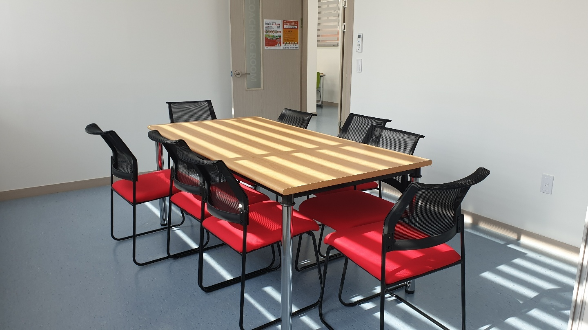
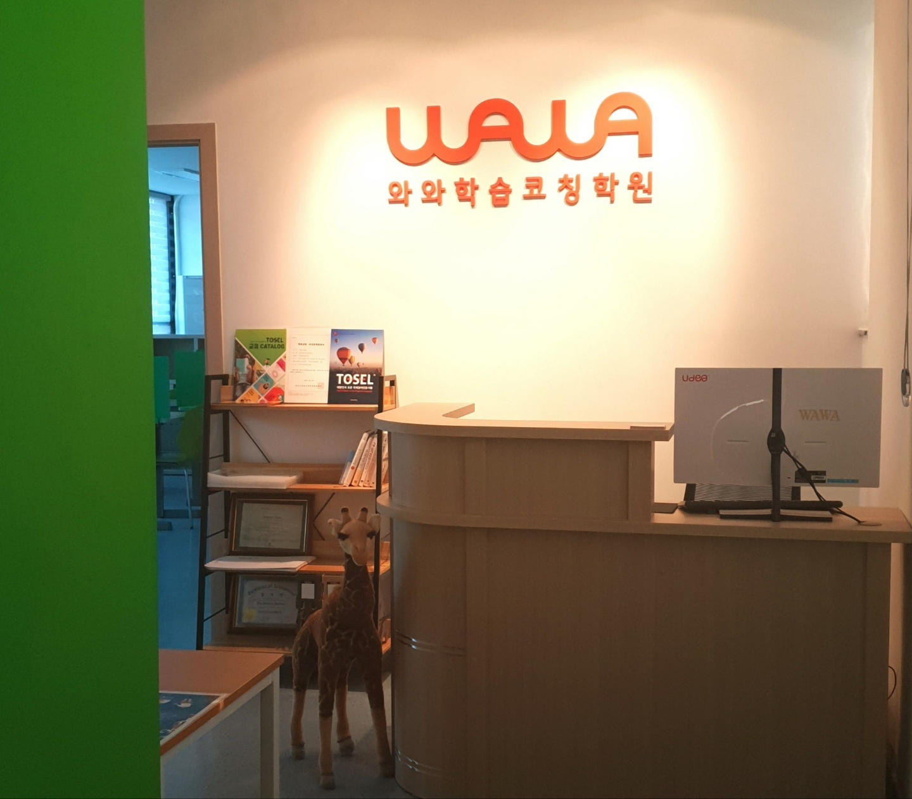
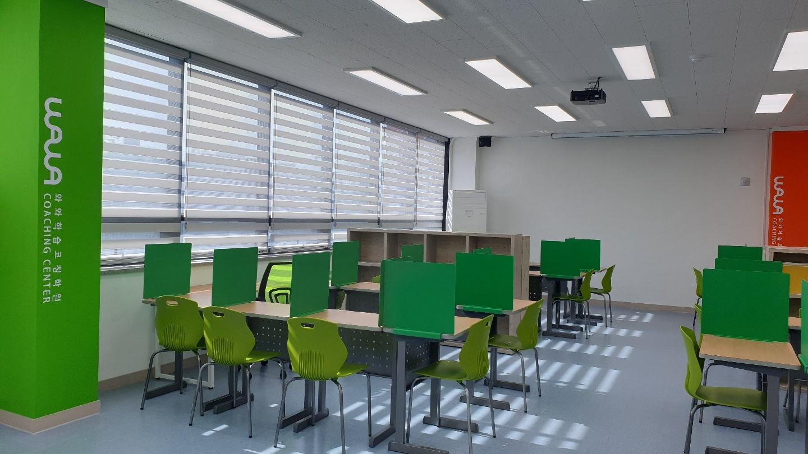

안녕하세요, 경기도 성남시 수정구 단대동 산성대로에 있는 와와학습코칭 단대점입니다. 단대오거리에서 가까운, 성남에서도 손꼽히게 오래된 동네입니다. 단대초등학교(단대초) 아이들이 성남서중학교(서중)·은행중학교(은행중)를 거쳐 성남고등학교(성남고)·성일고등학교(성일고)·동광고등학교(동광고)로 이어집니다. 걸어서 닿는 거리에 고등학교가 여러 곳 몰려 있다는 게 이 동네의 가장 큰 특징입니다.
오늘은 수업 이야기가 아니라 방 하나 이야기를 해 보려 합니다. 위 사진, 문에 ‘COACHING ROOM’이라고 적힌 상담실입니다.
왜 의자가 두 개가 아니라 여섯 개일까요
상담실이라고 하면 보통 작은 탁자 하나에 의자 둘을 떠올리십니다. 선생님 한 명, 학부모 한 명. 실제로 많은 곳이 그렇게 생겼습니다.
이 방은 다릅니다. 긴 테이블 하나에 의자가 여섯 개 둘러 있습니다. 자리를 많이 쓰려고 그런 것이 아닙니다. 한 아이 이야기를 할 때 그 자리에 앉아야 할 사람이 둘보다 많기 때문입니다.
- 학생 본인 — 오늘 이야기의 주인공입니다.
- 학부모님 — 집에서의 모습을 아는 유일한 사람입니다.
- 담당 코치 — 센터에서의 모습을 봅니다.
- 과목 선생님 — 성적표 뒤에 무엇이 있는지 압니다.
네 사람이 같은 테이블에 앉으면, 각자 알고 있던 조각이 하나로 맞춰집니다. 집에서는 책상에 오래 앉아 있다고 했는데 센터에서는 진도가 안 나가더라, 수학 점수는 떨어졌는데 실제로는 단원 하나에서만 틀렸더라 — 이런 이야기는 한 사람만 만나서는 나오지 않습니다.
아이를 빼고 하는 상담이 위험한 이유
상담을 오래 하다 보면 한 가지 장면이 반복됩니다. 어른들끼리 한 시간 동안 열심히 이야기해서 계획을 세웁니다. 그리고 그 계획을 나중에 아이에게 통보합니다.
이 방식이 왜 잘 안 되는지는 간단합니다. 아이 입장에서는 자기가 참여하지 않은 결정입니다. 지키지 않아도 마음이 덜 불편합니다. 계획을 안 지켰을 때 아이가 하는 말이 늘 비슷한 이유가 여기 있습니다. “나는 그렇게 하겠다고 한 적 없는데.”
반대로 아이가 그 자리에 앉아 있으면 달라집니다.
- 어른이 “하루 두 시간”이라고 말했을 때 아이가 “그건 무리예요”라고 대답할 수 있습니다. 그 자리에서 한 시간 반으로 조정하면, 지켜지는 계획이 됩니다.
- 왜 그 과목을 붙잡아야 하는지 아이가 직접 듣습니다. 전달 과정에서 잔소리로 변질되지 않습니다.
- 결정에 참여한 사람은 결과에도 책임을 느낍니다. 이건 나이와 상관없습니다.
그래서 저희는 아이가 있는 시간대에 상담 일정을 잡으려 합니다. 처음에는 어색해하는 아이도 있습니다. 어른 넷 사이에 앉아 있는 게 편할 리 없지요. 그래도 세 번째 상담쯤 되면 먼저 말을 꺼냅니다. 자기 이야기를 자기 입으로 하는 데 익숙해지기 때문입니다.
고등학교가 여러 곳이면 ‘공통 정답’이 없습니다

이 동네가 상담을 길게 해야 하는 동네인 데에는 이유가 있습니다. 앞서 말씀드린 대로 성남고등학교·성일고등학교·동광고등학교가 가까이 있고, 아이들이 서로 다른 학교로 흩어집니다.
학교가 다르면 무엇이 달라지느냐고 물으시는데, 실제로는 꽤 많은 것이 달라집니다.
- 시험 범위와 출제 스타일 — 같은 과목이라도 학교마다 강조하는 단원이 다릅니다.
- 수행평가 비중과 방식 — 어떤 학교는 발표가, 어떤 학교는 서술형 과제가 무겁습니다.
- 같은 등급의 무게 — 학교마다 인원과 분포가 다르니, 숫자 하나로 옆집 아이와 비교하는 건 의미가 없습니다.
그래서 “고1은 이렇게 하면 됩니다” 같은 한 줄짜리 답을 저희는 잘 드리지 않습니다. 대신 상담실에서 아이의 성적표와 학교 시험지를 같이 펼쳐 놓고, 어느 학교의 어떤 시험에 대응하는 계획인지를 만듭니다. 테이블이 긴 것도 사실 그래서입니다. 서류를 나란히 펼쳐 놓을 자리가 필요합니다.
상담에서 어른이 제일 많이 하는 질문, 그리고 더 나은 질문
부모님들께서 가장 자주 하시는 질문은 이겁니다. “몇 등급까지 올릴 수 있을까요?”
이해합니다. 궁금한 게 당연합니다. 다만 이 질문에 정직하게 답하려면 저희가 모르는 것을 알아야 합니다. 앞으로의 시험 난이도, 같은 학교 아이들의 컨디션, 아이가 실제로 쓸 시간. 그래서 숫자로 약속드리는 곳은 오히려 조심하셔야 합니다.
같은 자리에서 훨씬 쓸모 있는 질문이 있습니다.
- “지금 제일 먼저 손봐야 할 과목이 뭔가요?” — 순서가 정해지면 아이가 덜 지칩니다.
- “우리 아이는 어디서 시간을 흘리고 있나요?” — 공부량이 아니라 새는 지점을 찾는 질문입니다.
- “집에서는 뭘 하지 말아야 하나요?” — 부모님이 더 하실 일보다, 멈추실 일을 정하는 게 효과가 빠를 때가 많습니다.
- “다음 상담 때까지 확인할 한 가지는 뭔가요?” — 점검할 항목이 하나여야 실제로 점검됩니다.
이 네 가지를 물어보고 나가시면, 한 시간짜리 상담이 한 달짜리 계획이 됩니다.
상담실에서 정한 것이 옆방에서 굴러갑니다

상담실 문을 나서면 바로 이 방입니다. 창가를 따라 칸막이 책상이 줄지어 있고, 천장에는 빔 프로젝터가 달려 있습니다. 상담에서 정한 것이 말로만 남지 않도록, 같은 건물 안에서 바로 이어지게 되어 있습니다.
순서는 이렇습니다.
- 상담실에서 정한다 — 이번 주에 붙잡을 과목과 분량을 아이가 있는 자리에서 확정합니다.
- 학습실에서 한다 — 정한 분량을 칸막이 안에서 실제로 해냅니다. 코치가 돌면서 막힌 지점을 봅니다.
- 다음 상담에서 확인한다 — 지킨 만큼과 못 지킨 만큼을 숫자로 놓고 다음 주 분량을 다시 정합니다.
이 고리가 끊기면 아무리 좋은 상담도 ‘좋은 말씀’으로 끝납니다. 반대로 고리가 돌기 시작하면, 아이가 두세 달 뒤에는 상담 테이블에서 먼저 말합니다. 지난주에 이건 안 됐고 이건 됐으니 이번 주엔 이렇게 하고 싶다고요. 저희가 바라는 건 사실 그 한 장면입니다.
집에서 오늘부터 해 보실 수 있는 세 가지
- 결정하는 자리에 아이를 앉히십시오. 학원을 바꾸든 과목을 늘리든, 아이 없이 정하고 통보하는 순서만 바꿔도 반응이 달라집니다.
- 물어볼 것을 미리 적어 가십시오. 상담실에 앉으면 생각보다 시간이 빨리 갑니다. 위의 네 가지 질문 중 두 개만 적어 가셔도 충분합니다.
- 다음 점검 항목을 하나만 정하십시오. 여러 개를 정하면 한 달 뒤에 아무것도 확인되지 않습니다. 하나면 반드시 확인됩니다.
성남시 수정구 단대동, 단대오거리 가까이에서 와와학습코칭 단대점이 아이들과 함께하고 있습니다. 단대초등학교·성남서중학교·은행중학교, 그리고 성남고등학교·성일고등학교·동광고등학교에 다니는 아이를 두셨다면, 여섯 개 의자가 놓인 이 방에서 한 번 이야기 나눠 보시면 좋겠습니다. 아이와 함께 오시면 가장 좋습니다.
※ 이 글의 사진은 와와학습코칭 단대점에서 촬영한 것으로, 촬영 시점과 현재 모습이 다를 수 있습니다. 상담 진행 방식과 운영 시간, 개설 과목은 센터 사정에 따라 달라질 수 있으니 방문 전에 센터로 문의해 주시기 바랍니다. 인근 학교 목록은 센터 안내 자료를 기준으로 했으며, 배정 학교는 거주지와 학년도에 따라 달라집니다.